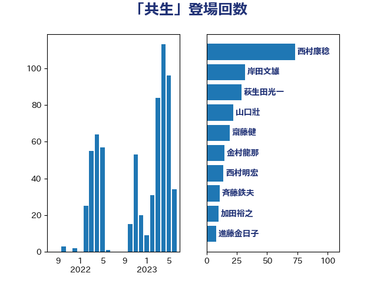

単語「共生」

| 西村康稔 | 自由民主党 | 73 回 |
| 岸田文雄 | 自由民主党 | 32 回 |
| 萩生田光一 | 自由民主党 | 29 回 |
| 山口壯 | 自由民主党 | 22 回 |
| 齋藤健 | 自由民主党 | 19 回 |
| 金村龍那 | 日本維新の会 | 15 回 |
| 西村明宏 | 自由民主党 | 14 回 |
| 斉藤鉄夫 | 公明党 | 11 回 |
| 加田裕之 | 自由民主党 | 10 回 |
| 進藤金日子 | 自由民主党 | 8 回 |
| 仁比聡平 | 日本共産党 | 8 回 |
| 中川正春 | 立憲民主党 | 8 回 |
| 松本剛明 | 自由民主党 | 7 回 |
| 平山佐知子 | 無所属 | 6 回 |
| 宮崎勝 | 公明党 | 6 回 |
| 古川禎久 | 自由民主党 | 6 回 |
| 務台俊介 | 自由民主党 | 6 回 |
| 竹詰仁 | 国民民主党 | 5 回 |
| 岩渕友 | 日本共産党 | 5 回 |
| 伊藤孝恵 | 国民民主党 | 5 回 |
| 一谷勇一郎 | 日本維新の会 | 5 回 |
| 漆間譲司 | 日本維新の会 | 4 回 |
| 泉健太 | 立憲民主党 | 4 回 |
| 日下正喜 | 公明党 | 4 回 |
| 新藤義孝 | 自由民主党 | 4 回 |
| 川合孝典 | 国民民主党 | 4 回 |
| 山田勝彦 | 立憲民主党 | 4 回 |
| 小宮山泰子 | 立憲民主党 | 4 回 |
| 寺田学 | 立憲民主党 | 4 回 |
| 宮路拓馬 | 自由民主党 | 4 回 |
| 太田房江 | 自由民主党 | 4 回 |
| 友納理緒 | 自由民主党 | 4 回 |
| 加藤勝信 | 自由民主党 | 4 回 |
| 音喜多駿 | 日本維新の会 | 3 回 |
| 葉梨康弘 | 自由民主党 | 3 回 |
| 清水真人 | 自由民主党 | 3 回 |
| 沢田良 | 日本維新の会 | 3 回 |
| 木村英子 | れいわ新選組 | 3 回 |
| 岸真紀子 | 立憲民主党 | 3 回 |
| 吉田はるみ | 立憲民主党 | 3 回 |
| 高橋光男 | 公明党 | 2 回 |
| 高木かおり | 日本維新の会 | 2 回 |
| 青木愛 | 立憲民主党 | 2 回 |
| 金子恭之 | 自由民主党 | 2 回 |
| 野間健 | 立憲民主党 | 2 回 |
| 野田聖子 | 自由民主党 | 2 回 |
| 輿水恵一 | 公明党 | 2 回 |
| 谷合正明 | 公明党 | 2 回 |
| 笹川博義 | 自由民主党 | 2 回 |
| 福島みずほ | 社会民主党 | 2 回 |
| 神谷政幸 | 自由民主党 | 2 回 |
| 石井章 | 日本維新の会 | 2 回 |
| 田村まみ | 国民民主党 | 2 回 |
| 熊谷裕人 | 立憲民主党 | 2 回 |
| 永岡桂子 | 自由民主党 | 2 回 |
| 梅村みずほ | 日本維新の会 | 2 回 |
| 斎藤アレックス | 国民民主党 | 2 回 |
| 山田美樹 | 自由民主党 | 2 回 |
| 山岡達丸 | 立憲民主党 | 2 回 |
| 小林一大 | 自由民主党 | 2 回 |
| 小倉將信 | 自由民主党 | 2 回 |
| 大岡敏孝 | 自由民主党 | 2 回 |
| 坂本祐之輔 | 立憲民主党 | 2 回 |
| 國重徹 | 公明党 | 2 回 |
| 中条きよし | 日本維新の会 | 2 回 |
| 中川康洋 | 公明党 | 2 回 |
| 中島克仁 | 立憲民主党 | 2 回 |
| 上野通子 | 自由民主党 | 2 回 |
| 上田清司 | 国民民主党 | 2 回 |
| 三ッ林裕巳 | 自由民主党 | 2 回 |
| たがや亮 | れいわ新選組 | 2 回 |
| 阿部司 | 日本維新の会 | 1 回 |
| 長谷川淳二 | 自由民主党 | 1 回 |
| 鎌田さゆり | 立憲民主党 | 1 回 |
| 野村哲郎 | 自由民主党 | 1 回 |
| 里見隆治 | 公明党 | 1 回 |
| 近藤昭一 | 立憲民主党 | 1 回 |
| 辻清人 | 自由民主党 | 1 回 |
| 赤嶺政賢 | 日本共産党 | 1 回 |
| 豊田俊郎 | 自由民主党 | 1 回 |
| 谷田川元 | 立憲民主党 | 1 回 |
| 谷公一 | 自由民主党 | 1 回 |
| 西村智奈美 | 立憲民主党 | 1 回 |
| 舩後靖彦 | れいわ新選組 | 1 回 |
| 自見はなこ | 自由民主党 | 1 回 |
| 米山隆一 | 立憲民主党 | 1 回 |
| 竹内真二 | 公明党 | 1 回 |
| 福田昭夫 | 立憲民主党 | 1 回 |
| 福島伸享 | 無所属 | 1 回 |
| 石垣のりこ | 立憲民主党 | 1 回 |
| 石原正敬 | 自由民主党 | 1 回 |
| 石井苗子 | 日本維新の会 | 1 回 |
| 畦元将吾 | 自由民主党 | 1 回 |
| 田嶋要 | 立憲民主党 | 1 回 |
| 田島麻衣子 | 立憲民主党 | 1 回 |
| 牧山ひろえ | 立憲民主党 | 1 回 |
| 牧原秀樹 | 自由民主党 | 1 回 |
| 滝波宏文 | 自由民主党 | 1 回 |
| 源馬謙太郎 | 立憲民主党 | 1 回 |
| 浅野哲 | 国民民主党 | 1 回 |
| 津島淳 | 自由民主党 | 1 回 |
| 河野義博 | 公明党 | 1 回 |
| 河西宏一 | 公明党 | 1 回 |
| 梶原大介 | 自由民主党 | 1 回 |
| 枝野幸男 | 立憲民主党 | 1 回 |
| 末松信介 | 自由民主党 | 1 回 |
| 新妻秀規 | 公明党 | 1 回 |
| 打越さく良 | 立憲民主党 | 1 回 |
| 市村浩一郎 | 日本維新の会 | 1 回 |
| 川田龍平 | 立憲民主党 | 1 回 |
| 岩田和親 | 自由民主党 | 1 回 |
| 岡田直樹 | 自由民主党 | 1 回 |
| 山田賢司 | 自由民主党 | 1 回 |
| 山田宏 | 自由民主党 | 1 回 |
| 山本順三 | 自由民主党 | 1 回 |
| 山下芳生 | 日本共産党 | 1 回 |
| 小野泰輔 | 日本維新の会 | 1 回 |
| 小沢雅仁 | 立憲民主党 | 1 回 |
| 小林茂樹 | 自由民主党 | 1 回 |
| 寺田静 | 無所属 | 1 回 |
| 奥下剛光 | 日本維新の会 | 1 回 |
| 大石あきこ | れいわ新選組 | 1 回 |
| 大島九州男 | れいわ新選組 | 1 回 |
| 堤かなめ | 立憲民主党 | 1 回 |
| 吉田統彦 | 立憲民主党 | 1 回 |
| 吉田久美子 | 公明党 | 1 回 |
| 古川元久 | 国民民主党 | 1 回 |
| 北村経夫 | 自由民主党 | 1 回 |
| 勝目康 | 自由民主党 | 1 回 |
| 勝俣孝明 | 自由民主党 | 1 回 |
| 加藤竜祥 | 自由民主党 | 1 回 |
| 伊佐進一 | 公明党 | 1 回 |
| 井出庸生 | 自由民主党 | 1 回 |
| 中川宏昌 | 公明党 | 1 回 |
| 三浦信祐 | 公明党 | 1 回 |
| 三宅伸吾 | 自由民主党 | 1 回 |
| おおつき紅葉 | 立憲民主党 | 1 回 |